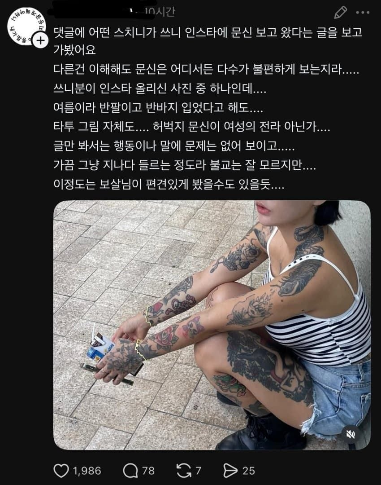

개인의 자유 어쩌구가 지 최대 권력인 줄 아네

개인의 자유 어쩌구가 지 최대 권력인 줄 아네
드루와 드루와
에휴ㅜ시벌 그래도 용서하니라 불쌍한 제자여
일단 몸매는 좋네
문신으로 사람을 차별하는게 불교의 율법인가?
불교에서는 포용할수있는데 거기 있는 대부분의 사람들은 포용할만큼 수행하지 않았으니까 못들여보내겠다는거임
문신해도 들어 갈 수 있음
허벅지에 저 문신이 문제인거임
다른 문신은 되는데 허벅지 문신은 안된다는 게 무슨 말임??
허벅지 문신 잘 보면 젖탱이가 대놓고 그려져 있으니까
허벅지 문신을 봐 저건 교회에서도 거를걸
문신 굳이 차별안함.
근데 문신 안한 사람들은 배려함.
개인적으로 가서 상담을 받는다거나 그랬으면 들어오라 했겠지 병신문신충들아ㅋㅋ
부처님은 99명을 죽인 앙굴리말라도 교화하셨지만 손가락 목걸이를 차고 돌아다니라고 하지 않으셨음
문신충이라 문전박대는 안하셨겠지만 대놓고 자랑하라고도 안하셨을거임
입뻰당하고 바로 꼰지르는 꼬라지 보면 의도가 선하지 않다는걸 알 수 있음 ㅇㅇ
절에는 당신만 방문해있는게 아니니 당연히 거부당할만 하지
불교 자체가 신을 믿는것보다는 정신수양이 주된 목표인데 문신하고 있는 사람이 다른 사람 불편한것도 이해 못 하면서 잘도 정신수양되겠다
부처께서는 들어오라 하셨을듯